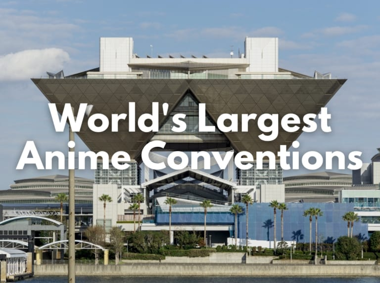
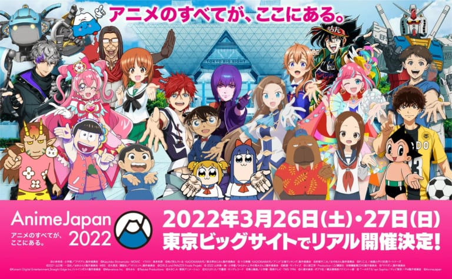
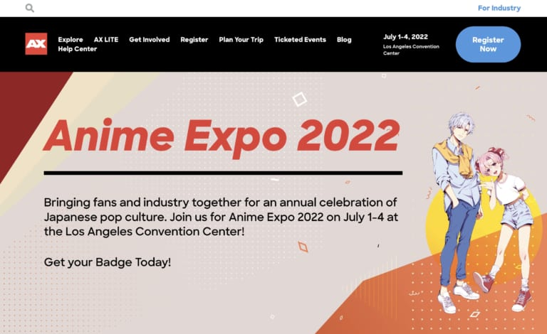
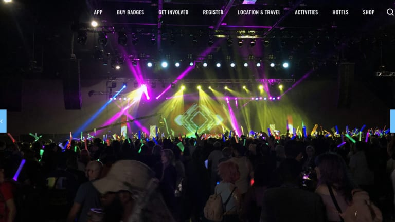
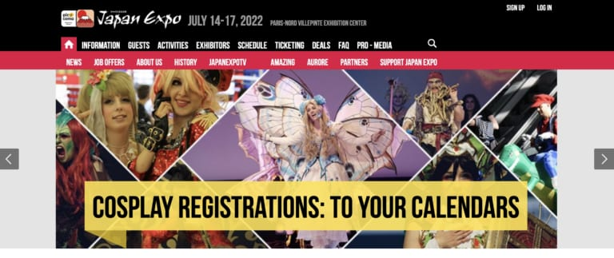
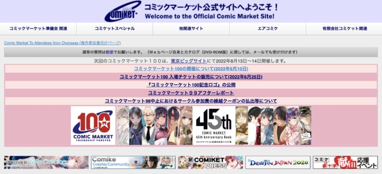

Anime Events
Lately, the island country Japan has been raised more attention from not just international keen travelers but a broader range of people who are interested in Japanese pop culture. There are some indigenous contents to Japan that have gained popularity worldwide: for example, anime, manga and light novels.
Especially, anime is now looked on as one of the hottest contents that are watched on various video streaming platforms such as Netflix, Hulu, Disney+ and so on. There are many large conventions related to anime and Japanese culture overseas these days. Some people join an exciting anime event held in their own countries. Others, who are enthusiatic anime geeks, come to the mecca of anime to have the authentic anime experiences.
For all anime fans all over the globe, here is the list of 5 largest anime events around the world. This anime event list will help you to attend the big event in your country or Japan if you make a plan to travel it. Check out the best places for anime lovers to visit now!
AnimeJapan (Tokyo)
AnimeJapan is the most famous and largest anime event in Japan and around the world, drawing over 100,000 people every year. The first AnimeJapan was held at Tokyo Big Sight in 2014, and the grand anime convention has been annually held in the same place since then. AnimeJapan 2020 was cancelled and AnimeJapan 2021 was held only online due to the COVID-19 pandemic, but AnimeJapan 2022 came back to Tokyo.
AnimeJapan is highlighted by the special stage performances called AJ Stage that are provided by popular voice actors, anime song artists and creators. There are also exhibitor booths with the theme of trendy studios and anime series selling various items and delivering new information.
Anime Expo (Los Angeles)
There are a lot of small and large anime events held all across the world. What is the largest-scale anime event except Japan is Anime Expo, also known as AX, in America. The U.S. enormous anime convention is annually held at Los Angeles Convention Center in California for four days in the beginning of July. Anime Expo has attracted an audience of over 100,000 people recently except 2020 and 2021, when the convention was held only online due to the spread of COVID-19.
It features Welcome & Closing Ceremonies, AX Masquerade & World Cosplay Summit USA Finals, Anime Music Video Competition and a great variety of booths related to trendy anime series. They give you the chances to see many anime creators, voice actors and artists. There are various entertainments for every fan of anime and other pop cultures at Anime Expo.
Anime Matsuri (Houston)
Anime Matsuri is one of the biggest annual anime event in America (“Matsuri” in the convention’s name means festival in Japanese). It has become an annual convention since it was first held at the George R. Brown Convention Center in Houston, Texas in 2007. In 2015, it took place in Houston as well as Anime Matsuri Hawaii at the Hawaii Convention Center in Honolulu. While Anime Matsuri was canceled due to the coronavirus in 2020, it came back to the familiar site in the following year.
It accepts tens of thousands of visitors every year, who can enjoy lots of exhibitors offering anime items, workshops and the latest information. Programmings of Anime Matsuri cover a variety of interests including anime, manga, video games, Jpop, Idols, Cosplays and other Japanese pop cultures.
Japan Expo (Paris)
Japan Expo, which is worldwide well-known to those who are interested in Japanese culture, is a large French convention with the theme of not only anime but the whole Japanese pop culture. Its inaugural event was organized in 2000. It is annually held in July at France’s second largest convention center Paris-Nord Villepinte Exhibition Center. The number of visitors reaches 200,000 every year. After Japan Expo was cancelled in 2020 and 2021 due to the spread of COVID-19, it is coming back to Paris in 2022.
The convention hall is filled with over 100 exhibition booths that sell exclusive items related to anime, manga, video games and so on. Some visitors join this enormous event for the latest anime premieres. Others get involved in the exiting live performances by trendy Japanese artists. There are many other experiences such as free new game plays, cosplay stages and traditional Japanese cultures including Sumo and Maiko.
Comic Market
Where do the authentic geeks visit every year? Comic Market, which is also known as Comiket, is the largest indoor Japanese pop culture event in Japan. It focuses on Doujinshi (fanzines), self-published print works that are sometimes based on famous existing contents such as manga, anime, video games, idols, etc. The classic event was first held in 1975, and it is held at Tokyo Big Sight in August and December, attracting hundreds of thousands of attendees every year except 2020.
The number of visitors in Comic Market reached 1 million in 2019. The Tokyo International Exhibition Center is filled with a massive amount of small booths, where countless Dojinshi products are sold by approx. 20,000-30,000 circles.